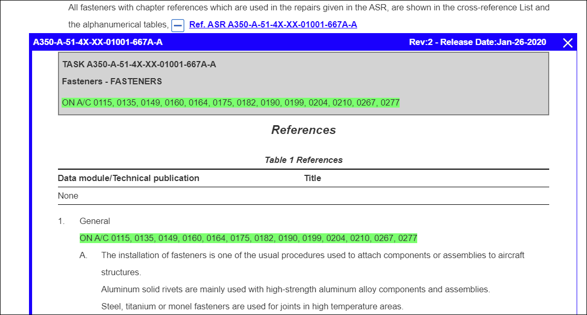
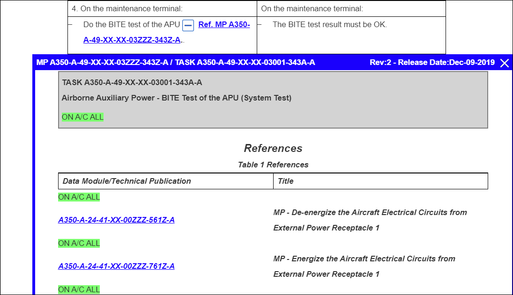

Embedded references can appear within text and tables in a publication. You can
identify the references by the  icon and the reference link immediately
after the icon, for example:
icon and the reference link immediately
after the icon, for example:
You can use the  Show Reference and
Show Reference and  Hide Reference icons to show/hide the embedded
reference.
Hide Reference icons to show/hide the embedded
reference.
The header title shows this information:
- Embedded Reference Title
- Revision Number (or document revision number)
- Release Date (if document is released)
You can also have embedded references within another reference.
If you select an applicability filter, only references that apply to that filter are expandable within the content. Any content and embedded references not in the selected filter are grayed out, and the references cannot be opened.
To show/hide an embedded reference in a publication, do these steps:
-
Click the
 Show Reference icon to view the embedded
reference.
The reference is shown in a container frame, for example:
Show Reference icon to view the embedded
reference.
The reference is shown in a container frame, for example:
Expanded Embedded Reference
Note: You must click the Show Reference icon to open
the embedded reference in the currently viewed publication. If you click
the reference link, the reference opens in the
Content pane, and the original publication is
not visible.When you open an embedded reference in a table, the reference is shown directly below the table row containing the selected reference, for example:
Expanded Embedded Reference (Table)
Note: When you open an embedded reference, the icon changes to the  icon.You can expand multiple embedded references. These are shown in separate container frames with their own header, for example:
icon.You can expand multiple embedded references. These are shown in separate container frames with their own header, for example:
Multiple Expanded Embedded References
If the embedded reference contains a graphic, the graphic appears as a thumbnail within the reference. When you click the graphic link in the thumbnail, the graphic opens in the Graphics pane.Note: If you expand a graphic in an embedded reference, the figure list corresponds to the primary document and does not contain figures from the expanded embedded reference.Embedded references can contain attachments (such as supplements or temporary revisions). If there are attachments associated with the reference, these are indicated by icons, pop-ups, and banners that allow you to view these documents. The "Attachments" box in the right margin of the application window is updated with the attachments from the embedded content. It updates when you open or close an embedded reference. For details on viewing attachments, refer to View Attachment.Note:- The attachment feature works only in tasked documents with that functionality enabled.
- You cannot create or edit attachments in an embedded reference.
Any annotations contained in an embedded reference display within the reference. The "Annotations" box in the right margin of the application window is updated with the annotation from the embedded content. It updates when you open or close an embedded reference. For more information on annotations, refer to Annotations.Note:- You cannot create or edit an annotation in an embedded reference.
- The annotation tray does not indicate where the annotation is located within the document.
-
Click the Hide Reference icon to close a reference.
Note: You can also click the Close icon at the right-side of the header to close all references within the expanded reference.